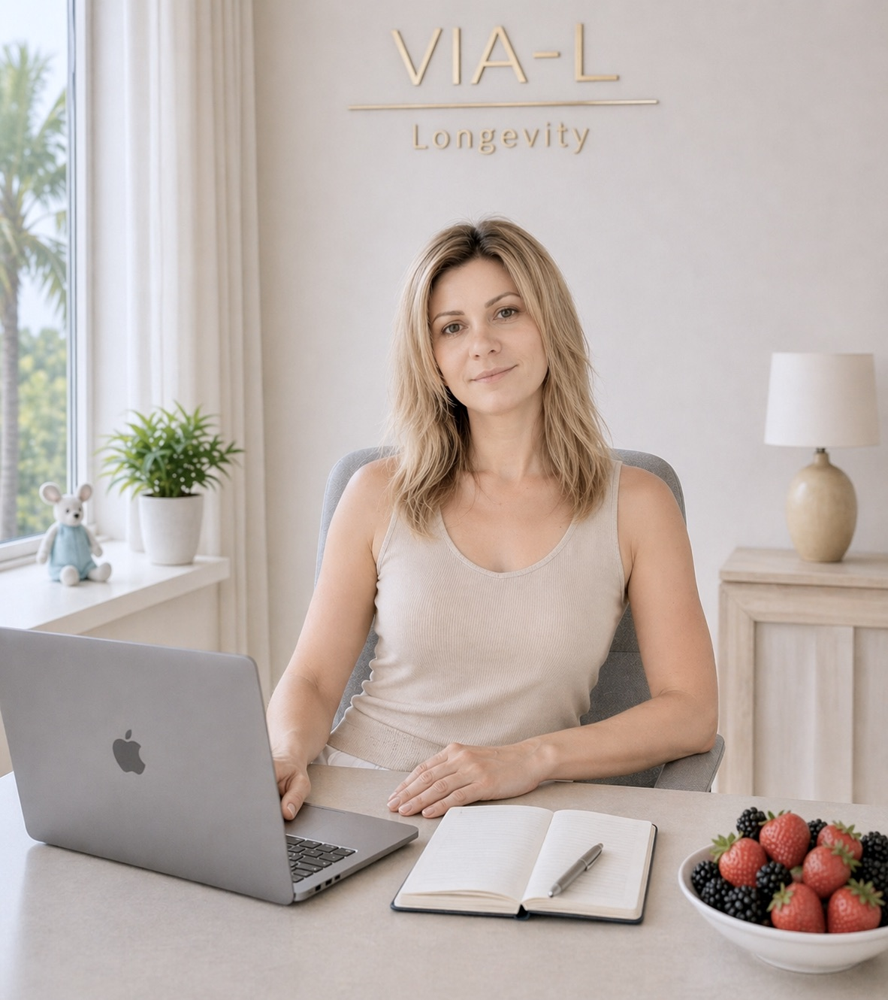
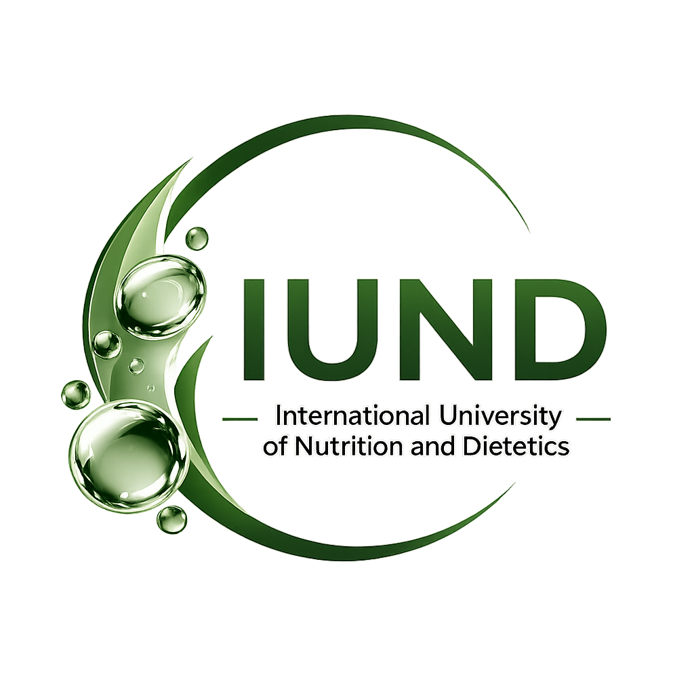

Вам за 35 — і з вами щось відбувається
Сон, настрій, цикл, сили змінюються. Це може бути перименопауза — а може бути щось інше. Давайте розберемося.
Почати безкоштовний розбір VIA-L
З чим сюди приходять
Зміни приходять поступово і здаються не пов’язаними між собою. Часто чуєш «це вік» або «аналізи в нормі». Знайоме?
Сон
Прокидаєтеся о 4 ранку й не можете заснути. Зранку розбита, навіть якщо спала досить.
Що бачить кільце чи годинник
Коли саме ви прокидаєтеся і скільки разів за ніч. Не «здається, погано спала», а «три пробудження після 4:00».
Припливи
Раптовий жар, нічна пітливість, доводиться відкривати вікно взимку.
Що бачить кільце чи годинник
Під час нічного припливу шкіра теплішає, пульс частішає. Пристрій бачить такі сплески, навіть якщо ви не прокинулися до кінця.
Голова
Забуваєте слово посеред фрази, важче зосередитися. Це лякає більше за все інше.
Що бачить кільце чи годинник
Увагу пристрій не міряє. Але видно, як ви спали й відновилися, — а недосип сам по собі б’є по пам’яті та зосередженості.
Настрій
Тривога без причини, дратівливість, сльози на рекламі.
Що бачить кільце чи годинник
Пульс у спокої та варіабельність пульсу (HRV) — показники напруги. Ми порівнюємо їх з вашою власною нормою, а не із середньою.
Цикл
Коротший або довший, рясніший, пропуски — передбачуваність зникла.
Що бачить кільце чи годинник
Нічна температура шкіри в другій половині циклу зазвичай трохи вища. Коли цей рисунок змінюється, це видно на графіку.
Тіло
Вага йде на живіт, суглоби скуті зранку, сил менше, ніж раніше.
Що бачить кільце чи годинник
Кроки, рух, відновлення після навантаження. Немає пристрою — щоденна відмітка в застосунку, до хвилини.
Що ви отримаєте за хвилину
- На що це схоже — чесно, без діагнозу і без «це просто вік».
- Що фахівець зазвичай хоче виключити: щитоподібну залозу, запаси заліза, апное сну — залежно від ваших відповідей.
- Два прості кроки, з яких можна почати вже цього тижня.
- Три питання, які варто поставити лікарю, — вашими словами.
- Розбір одразу на сторінці, його можна завантажити. Пошту не питаємо.
Тривога, припливи і ранні пробудження в 40–44 — коли все почалось більш ніж рік тому
Що ви розповіли
Більше року вас турбують перепади настрою, тривожність і дратівливість — і це головне. Паралельно з’явились припливи, нічна пітливість, туман у голові, зміни у вазі та лібідо. Сон порушений: ви прокидаєтесь вночі або о 3–5 ранку і не можете заснути знову.
На що це схоже
Така картина — тривожність, дратівливість, пробудження саме в ранні ранкові години, припливи — часто зустрічається при гормональних коливаннях, навіть якщо цикл поки регулярний. Разом з тим хронічний недосип сам по собі здатний підсилювати будь-який з цих симптомів — іноді важко зрозуміти, що первинне. Те, що це триває більше року, — вагомий привід нарешті розібратись, а не чекати далі.
Що фахівець зазвичай хоче виключити
Спеціаліст, як правило, хоче переконатись, що справа не в недосипі як самостійній причині тривожності та туману в голові. Також зазвичай перевіряють щитовидну залозу (ТТГ): її стан може давати схожу картину. Якщо пригніченість або тривога тривають більше двох тижнів поспіль і заважають звичайному життю — це привід звернутись до спеціаліста окремо, не списуючи на вік.
Що можна зробити вже зараз
- Зафіксуйте в застосунку кільця (або в нотатнику) три-чотири дні поспіль: час пробудження, як почуваєтесь зранку і чи були припливи вночі — з цим уже можна йти до лікаря.
- Запишіться на консультацію до гінеколога або терапевта і візьміть направлення на базові аналізи — мінімум ТТГ і загальний аналіз крові, якщо не здавали більше року.
Що запитати у фахівця
- Чи можуть мої нічні пробудження о 3–5 ранку та тривожність бути пов’язані з гормональними коливаннями, якщо цикл поки регулярний?
- Які аналізи варто здати в першу чергу, щоб виключити не гормональні причини мого стану?
- Чи є щось конкретне, що я можу змінити в режимі або харчуванні вже зараз, до консультації?
Це не діагноз і не заміна візиту до лікаря.
Спершу розбір, безкоштовно. Далі — лише якщо потрібно
Відповідаєте на 12 питань
Про цикл, сон, самопочуття, аналізи. Можна відповідати «не знаю».
Отримуєте розбір одразу
На сторінці, за хвилину. Його можна завантажити й показати лікарю.
Вирішуєте самі, що далі
Нічого не потрібно купувати. Якщо захочете — є застосунок, знайомство зі спеціалістом і клуб.
Зараз, а не потім
Перехід — це не тиждень і не місяць. Чим раніше зрозуміло, що відбувається, тим більше можна зробити.
жінок у перехідний період мають припливи або нічну пітливість.
✓ доведеноу середньому тривають припливи — це не «перетерпіти кілька місяців».
✓ доведеновищий ризик апное сну після менопаузи — а в жінок його часто пропускають.
≈ зв’язок показано, причина не остаточнаПравила, за якими пише розбір, спираються майже на 1600 досліджень. Кожну цифру ми позначаємо чесно: ✓ доведено · ≈ є дані, але не остаточні · ? поки невідомо.
Ваше тіло вже веде щоденник. Ми його читаємо
Кільце чи годинник щоночі записують сон, пульс і температуру. Окремо ці цифри мало що кажуть. Разом із вашими відмітками вони показують, що саме вас будить і що змінюється.
У цьому прикладі ночі з припливами збігаються з вищою температурою і частішими пробудженнями. Пунктир — ваша особиста норма. Це вже розмова з лікарем на фактах, а не «здається».
- Ваша норма, а не середня. Ми порівнюємо вас із вами: пульс, HRV, сон і температуру — з вашими ж звичними значеннями.
- Без кільця теж працює. Щоденна відмітка в застосунку — до хвилини: сон, припливи, настрій, сили.
- Підключається те, що вже є: Apple Health, Health Connect, Oura, Fitbit, Polar, Withings.
- Дані — ваші. Спеціаліст бачить їх лише тоді, коли ви самі обираєте супровід.
Один фокус на тиждень, а не двадцять порад
Між візитами до лікаря минають тижні. Ми робимо так, щоб вони не минали дарма.
Щодня — до хвилини
Дані з кільця чи годинника підтягуються самі, ви відмічаєте сон, припливи, настрій.
Раз на тиждень — розбір
Що змінилося, з чим це пов’язано і що запитати у спеціаліста.
Один фокус
Застосунок обирає один головний крок на тиждень — той, що зараз найбільше впливає на ваш стан, і пояснює, чому саме він.
Курс «День 1–7»
Маленькі щоденні кроки під цей фокус. Наприкінці тижня по ваших даних видно, чи є зміни.
3 кроки з VIA-L
Безкоштовний розбір VIA-L
12 питань, хвилина часу. Що з вами відбувається, на що це схоже і з чим іти далі.
Пройти розбірЗастосунок VIA-L
Щоденний розбір вашого стану, зокрема з кільця чи годинника, і один фокус на тиждень. 3 дні безкоштовно.
Супровід зі спеціалістом VIA-L
Особистий план на 8–12 тижнів: аналізи, харчування, сон, щотижневі зустрічі. Почати можна з 15 хвилин безкоштовно.

Марина Даценко, спеціаліст VIA-L
Працюю з жінками в перименопаузі й менопаузі: харчування, сон, рух — на основі ваших даних і досліджень, а не загальних порад.
 Сертифікована фахівчиня з перименопаузи — Perry Academy Perimenopause Certificate®
Сертифікована фахівчиня з перименопаузи — Perry Academy Perimenopause Certificate®- IMSЧленкиня International Menopause Society
- EMASЧленкиня European Menopause and Andropause Society

Диплом Міжнародного університету нутриціології та дієтології (IUND)
Спеціаліст VIA-L не ставить діагнозів і не призначає ліків. Розбір готує ШІ за правилами, складеними на базі досліджень.
Що ще може зупиняти
Це діагноз?
Ні. Розбір пояснює, на що схожа ваша картина, що зазвичай перевіряють і що запитати у фахівця. Діагноз ставить лікар.
Я не впевнена, що це перименопауза
Саме для цього розбір: він чесно скаже, якщо ваші відповіді більше схожі на іншу причину, і що варто виключити.
Потрібні аналізи?
Ні. Якщо щось здавали — відзначите, якщо ні — розбір підкаже, які аналізи зазвичай обговорюють з лікарем.
Куди йдуть мої відповіді?
Ми не питаємо ім’я, пошту чи телефон. Відповіді зберігаються анонімно — лише для статистики. Розбір пише ШІ за нашими правилами.
Скільки це коштує?
Розбір безкоштовний. Знайомство з Мариною — теж, 15 хвилин. Застосунок — 3 дні безкоштовно, далі за підпискою, якщо захочете.
Якщо я пройду й нічого не куплю?
Розбір залишиться у вас — його можна завантажити. Ніяких листів і дзвінків після цього не буде.
Почніть з того, що заважає вам сьогодні
12 питань, одна хвилина — і ви знатимете, з чого почати.
Почати безкоштовний розбір VIA-L